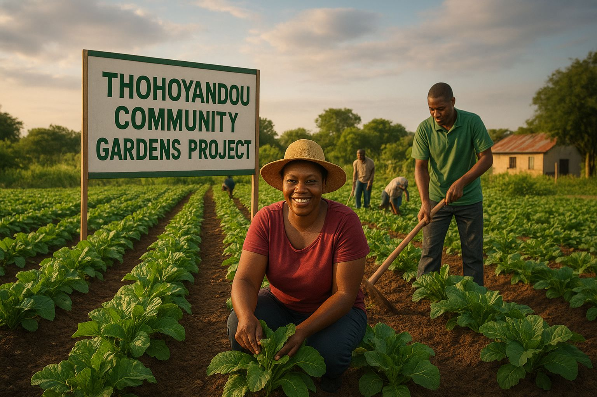

 Our initiative focuses on community-driven garden projects as a practical and sustainable answer to food insecurity. We believe the solution lies within the community itself. How Our Garden Projects Work: Community Ownership: Residents are not just beneficiaries; they are active participants in planning, building, and maintaining the gardens. This fosters a strong sense of ownership and cooperation. Sustainable Practices: We promote environmentally friendly methods like composting, water harvesting, and mulching to ensure our gardens thrive for years to come without harming the environment. Capacity Building: We provide regular training workshops on climate-resilient farming, soil management, and water conservation, equipping community members with valuable skills. Diversified Crops: We encourage planting a variety of drought-resistant crops (like sorghum, millet, and sweet potatoes) to ensure a stable harvest even in difficult conditions.